3. AUTOCORRELAÇÃO E DEPENDÊNCIA ESPAÇO-TEMPORAL (ANÁLISE ESPAÇO-TEMPORAL GLOBAL E LOCAL)#
Ouça o resumo do capítulo em áudio:
A análise espaço-temporal desempenha um importante papel na compreensão de fenômenos que variam ao longo do tempo e do espaço, permitindo a identificação de padrões de distribuição e dependência. Fenômenos espaciais frequentemente não seguem uma distribuição aleatória, mas sim padrões específicos influenciados pela proximidade geográfica e pela continuidade temporal. Para investigar essas relações, utilizam-se métricas de autocorrelação, que quantificam a dependência entre valores de uma variável considerando tanto o espaço quanto o tempo.
A autocorrelação é a correlação de uma variável com ela mesma ao longo de diferentes localizações ou momentos no tempo. No contexto espaço-temporal, considera-se a autocorrelação espacial, temporal e espaço-temporal. A autocorrelação espacial mede a relação entre valores de uma variável em diferentes locais. Se valores semelhantes estão próximos, há autocorrelação positiva (clusters). Se valores diferentes estão próximos, há autocorrelação negativa (dispersão). A Figura 1 ilustra exemplos de diferentes tipos de autocorrelação espacial.
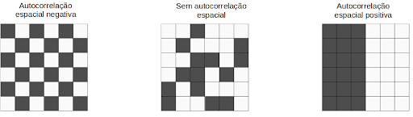
Figura 1: Exemplos de configurações de áreas mostrando diferentes tipos de autocorrelação espacial (Fonte: Adaptado de Moraga, 2023).
A autocorrelação temporal avalia a persistência de um fenômeno ao longo do tempo em um mesmo local, medindo a tendência de uma variável repetir padrões em intervalos temporais. Já a autocorrelação espaço-temporal combina as dimensões espacial e temporal, permitindo analisar como um fenômeno se distribui ao longo do espaço e do tempo simultaneamente.
Para quantificar a autocorrelação em diferentes contextos, utilizam-se diversas métricas. O Índice de Moran Global mede a autocorrelação espacial globalmente, indicando se os valores de uma variável se agrupam ou se dispersam em toda a área de estudo. O Local Moran (LISA) oferece uma visão local da autocorrelação espacial, identificando clusters e outliers específicos dentro da área analisada. O Índice G de Getis-Ord foca na identificação de hotspots (alta concentração) e coldspots (baixa concentração) de uma variável no espaço. O Índice de Geary’s C é similar ao Índice de Moran, mas mais sensível a variações locais, medindo a diferença absoluta entre valores vizinhos. Já o variograma espacial, amplamente utilizado em geoestatística, mede a dependência espacial em função da distância.
A escolha entre análise global e local depende do objetivo do estudo. A análise global oferece uma visão geral dos padrões espaciais na área de estudo como um todo, sendo útil para responder perguntas amplas, como “Os dados seguem um padrão espacial significativo?”. Por outro lado, a análise local aproxima-se da granularidade dos dados, permitindo identificar áreas específicas com padrões distintos, sendo ideal para descobrir hotspots, coldspots e outliers espaciais.
3.1 Estudo de caso: Análise do número de avaliações de imóveis no bairro de Copacabana, Rio de Janeiro#
Para ilustrar os conceitos discutidos anteriormente, este estudo de caso analisa a distribuição do número de avaliações de hospedagens no bairro de Copacabana, Rio de Janeiro, ao longo do ano de 2024. O objetivo principal é aplicar tanto métricas globais quanto locais de autocorrelação espacial, temporal e espaço-temporal, buscando identificar padrões de agrupamento e dispersão das avaliações, detectar hotspots e coldspots e comparar os resultados das diferentes abordagens. Essa aplicação prática demonstrará como utilizar estatísticas de autocorrelação em um cenário real, oferecendo subsídios concretos paraa tomada de decisão com base em dados.
O bairro de Copacabana foi escolhido não apenas por sua relevância turística, mas também pela disponibilidade pública dos dados do Airbnb no Rio de Janeiro, o que facilita a aplicação prática das metodologias de análise espaço-temporal. Com uma alta concentração de hospedagens, restaurantes e atrações, o bairro oferece um ambiente ideal para explorar padrões sazonais de avaliações online e identificar áreas de maior demanda turística ao longo do ano. A análise abrange 3.395 imóveis cadastrados na região, que juntos somaram 20.591 avaliações em 2024.
O arquivo contendo o código em R e os dados está disponível em:
semana_3_codigoR_dados.zip
Você também pode acompanhar a execução passo a passo em nosso canal no YouTube:
▶Assista ao vídeo da Semana 3
Observação: em alguns trechos, o código mostrado no vídeo pode estar ligeiramente diferente do arquivo disponibilizado. Isso acontece porque alguns pacotes foram atualizados, exigindo pequenos ajustes no código da versão mais recente.
No quadro 1 apresentam-se as estatísticas das avaliações por imóvel:
Métrica |
Valor |
|---|---|
min_avaliacoes |
1 |
max_avaliacoes |
135 |
media_avaliacoes |
20.29 |
mediana_avaliacoes |
17 |
desvio_padrao |
14.56 |
q1 (1º quartil) |
9 |
q3 (3º quartil) |
28 |
iqr (Intervalo Interquartil) |
19 |
Mínimo de Avaliações (1): O imóvel menos avaliado recebeu apenas uma avaliação, indicando que alguns imóveis têm baixa rotatividade ou são novos na plataforma.
Máximo de Avaliações (135): O imóvel mais avaliado recebeu 135 avaliações, sugerindo alta popularidade ou uso frequente.
Média de Avaliações (20.29): Em média, cada imóvel recebeu cerca de 20 avaliações, o que reflete a distribuição geral das avaliações entre os imóveis.
Mediana das Avaliações (17): A mediana indica que 50% dos imóveis receberam até 17 avaliações. Como a mediana é menor que a média, isso sugere uma distribuição levemente assimétrica à direita, com alguns imóveis muito avaliados puxando a média para cima.
Desvio Padrão (14.56): Indica a dispersão das avaliações em relação à média. Um desvio padrão relativamente alto (comparado à média) mostra uma variabilidade significativa na quantidade de avaliações por imóvel.
1º Quartil (9) e 3º Quartil (28): 25% dos imóveis têm 9 ou menos avaliações, e 75% têm até 28 avaliações.
Intervalo Interquartil (IQR = 19): A diferença entre o 3º quartil e o 1º quartil (28 - 9) mostra a dispersão central dos dados, sugerindo que a maior parte das avaliações (50% centrais) estão distribuídas entre 9 e 28 avaliações por imóvel.
A Figura 2 apresenta a distribuição espacial das hospedagens e o número total de avaliações recebidas ao longo do ano.
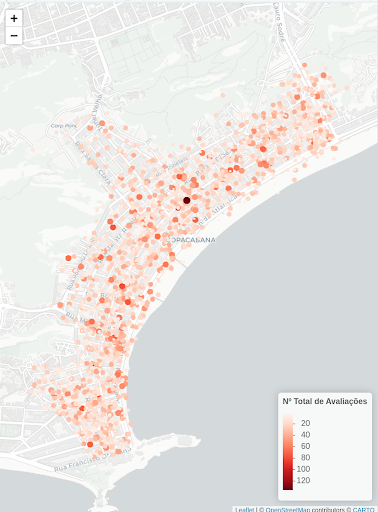
Figura 2. Distribuição espacial das hospedagens e número total de avaliações em 2024.
Na figura, os pontos representam os imóveis cadastrados e a intensidade das cores reflete a quantidade de avaliações. É possível observar uma maior concentração de hospedagens e avaliações ao longo da orla de Copacabana, especialmente nas proximidades da Avenida Atlântica, que abriga os principais hotéis e pontos turísticos do bairro. Além disso, foram identificados clusters de alta atividade turística em áreas específicas, enquanto regiões mais afastadas da orla apresentaram menor densidade de avaliações.
A partir dessa análise preliminar, emergem três principais conclusões: (1) a maior parte das hospedagens está concentrada na orla de Copacabana; (2) os estabelecimentos com maior número de avaliações estão localizados em áreas específicas, sugerindo a existência de hotspots turísticos onde a demanda por hospedagem é mais intensa; e (3) a distribuição das avaliações é heterogênea, indicando que fatores como localização e infraestrutura influenciam diretamente o comportamento dos turistas. Para complementar essa análise, a Figura 3 exibe um histograma da distribuição do número de avaliações por imóvel ao longo do ano.
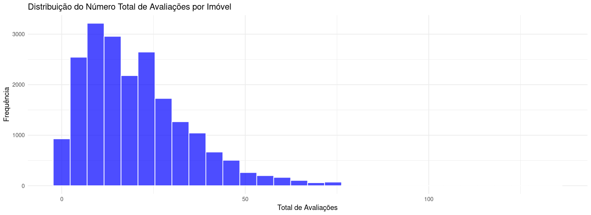
Figura 3. Histograma da distribuição de avaliações por imóvel em Copacabana em 2024.
O gráfico revela uma assimetria à direita, onde a maioria dos imóveis recebe relativamente poucas avaliações, com uma diminuição gradual na frequência à medida que o número de avaliações aumenta. Observa-se que grande parte das hospedagens acumula menos de 50 avaliações, sugerindo que a maioria dos estabelecimentos tem baixa visibilidade ou atratividade para os turistas. No entanto, uma parcela menor de imóveis se destaca com mais de 100 avaliações, apontando para uma popularidade significativamente maior. Além disso, o histograma ajuda a identificar outliers, ou seja, imóveis com um número excepcionalmente alto de avaliações. Esses casos podem indicar propriedades que se beneficiam de uma combinação de fatores positivos, como alta demanda, qualidade do serviço ou uma forte presença online.
A Figura 4 apresenta a evolução do número total de avaliações de imóveis do Airbnb ao longo de cada mês do ano de 2024.
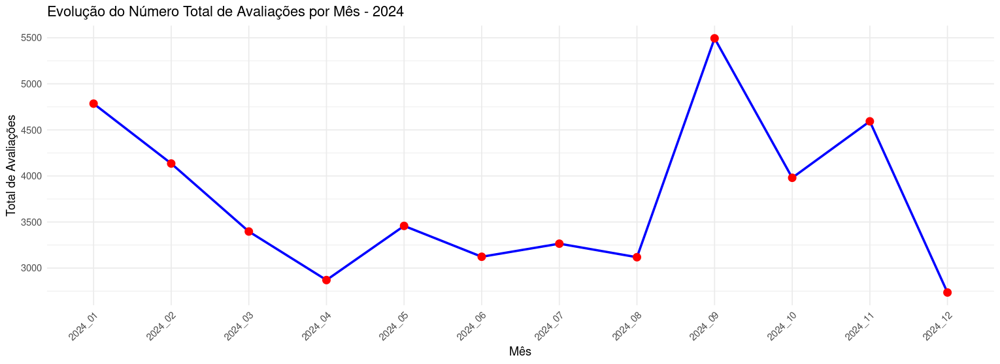
Figura 4: Evolução do número total de avaliações mensais dos imóveis em 2024.
Observa-se uma forte queda no número de avaliações de janeiro a abril, passando de aproximadamente 5000 avaliações em janeiro para cerca de 3000 avaliações em abril. A partir desse ponto, o número de avaliações oscila ao longo do ano, com momentos de alta e baixa distintos.
O início do ano, em janeiro, registrou o maior número de avaliações, possivelmente devido à alta temporada de verão no Brasil. Por outro lado, abril apresentou o menor número de avaliações, o que pode estar relacionado à baixa temporada ou a uma redução temporária na demanda. Em setembro, houve um novo pico de avaliações, alcançando aproximadamente 5500. No entanto, chama atenção a forte queda no número de avaliações em dezembro, atingindo o menor valor do ano.
A análise do gráfico sugere a existência de um padrão sazonal, em que os picos de demanda ocorrem no início do ano e no terceiro trimestre, enquanto os períodos de baixa demanda se concentram em abril e dezembro. Fatores como o clima, a realização de eventos locais, a influência de feriados, bem como aspectos econômicos, como promoções ou políticas de preços, podem ter contribuído para essa variação ao longo do ano. A queda acentuada em dezembro, em particular, merece uma análise mais aprofundada, pois contrasta com a expectativa de alta demanda típica do período de festas.
Na figura 5 apresenta-se a distribuição espacial das hospedagens e o número total de avaliações recebidas ao longo de cada mês do ano de 2024.
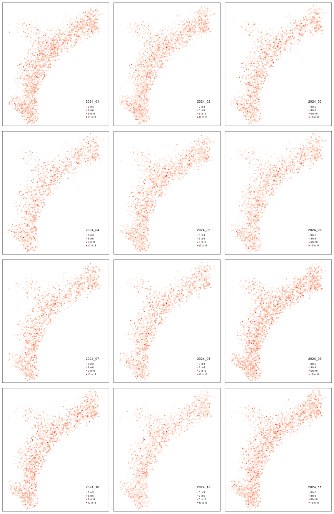
Figura 5. Distribuição espacial das hospedagens e número total de avaliações mensais ao longo de 2024.
A figura 6 apresenta a distribuição do número de avaliações por registro de hospedagem no Airbnb ao longo dos meses de 2024. Cada subgráfico representa um mês específico, permitindo a análise da frequência de avaliações por imóvel ao longo do ano.
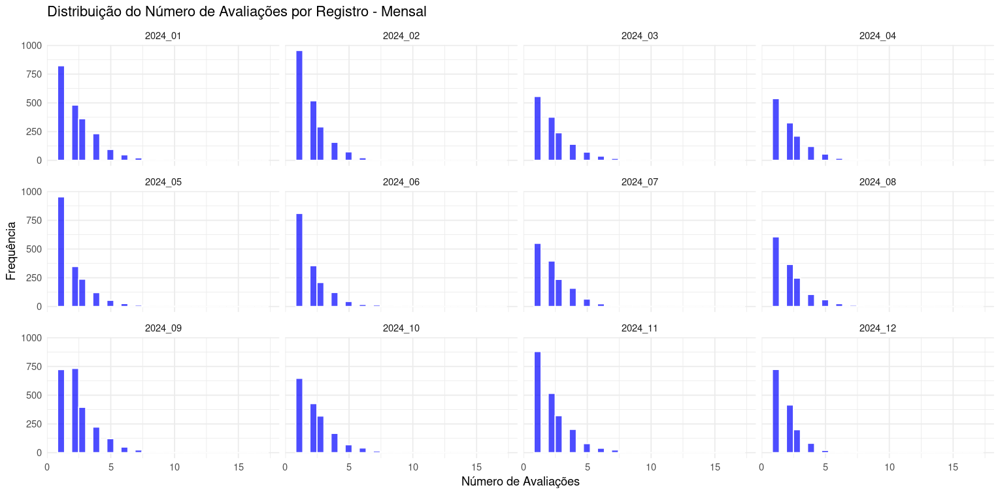
Figura 6: histograma da distribuição do número mensal de avaliações por imóvel.
Com base na figura 5 é possível observar, em todos os meses, uma distribuição assimétrica à direita, com a maioria dos registros concentrados em baixas contagens de avaliações. A maior parte dos imóveis recebeu entre 0 e 2 avaliações mensais, independentemente do mês analisado. Essa concentração em baixas frequências sugere que poucos imóveis recebem avaliações de forma recorrente, enquanto a maioria tem pouca ou nenhuma avaliação em um determinado mês.
Os meses de janeiro (2024_01) e setembro (2024_09) apresentam uma distribuição mais “espalhada” em relação aos demais meses, com um pequeno número de imóveis recebendo até 15 avaliações. Isso é consistente com a análise prévia que identificou esses meses como períodos de alta demanda, provavelmente relacionados à alta temporada de verão e eventos específicos na cidade.
Por outro lado, meses como abril (2024_04) e junho (2024_06) exibem uma concentração ainda maior na faixa de 0 a 2 avaliações, reforçando a ideia de baixa demanda nesse período. A baixa dispersão nesses meses indica uma menor movimentação de reservas, possivelmente refletindo uma sazonalidade negativa ou baixa atratividade turística nesse período.
Os resultados até aqui sugerem que o mercado de hospedagens em Copacabana é altamente heterogêneo, com grandes variações no volume de avaliações entre os diferentes estabelecimentos. Na próxima etapa da análise, serão aplicadas métricas estatísticas de autocorrelação espacial e espaço-temporal para verificar se os padrões observados possuem significância estatística. Essas técnicas permitirão verificar se as avaliações estão espacialmente agrupadas e se existe uma dependência temporal na distribuição das interações dos hóspedes ao longo do ano.
3.2 Análise Global#
A análise global é uma abordagem que examina padrões espaciais considerando toda a área de estudo de forma agregada, sem distinguir variações locais específicas. Seu principal objetivo é avaliar se há uma estrutura espacial significativa nos dados, indicando a presença de agrupamentos (clusters) ou dispersão ao longo do espaço. Diferentemente da análise local, que busca identificar onde esses padrões ocorrem, a análise global foca em determinar se um padrão espacial existe, mas sem apontar suas localizações específicas.
Na prática, a análise global responde a perguntas como:
Os dados exibem um padrão espacial significativo em toda a área de estudo?
A distribuição espacial dos valores é aleatória ou estruturada?
Há uma tendência geral de agrupamento (valores semelhantes próximos) ou de dispersão (valores diferentes próximos)?
Para alcançar essas respostas, utiliza-se uma série de métricas estatísticas globais. Entre elas, destaca-se o Índice de Moran Global, que mede a autocorrelação espacial em nível global, quantificando se as regiões vizinhas tendem a ter valores semelhantes (autocorrelação positiva) ou diferentes (autocorrelação negativa). Além disso, o Índice G de Getis-Ord avalia a intensidade do agrupamento de altos ou baixos valores (hotspots e coldspots globais), enquanto o Índice de Geary’s C oferece uma visão complementar ao medir a diferença absoluta entre valores vizinhos. Cada uma dessas métricas traz uma perspectiva única para a análise global, permitindo identificar tendências espaciais gerais sem detalhar variações locais.
Ao aplicar a análise global, é possível obter uma visão panorâmica da distribuição espacial dos dados, ideal para identificar padrões amplos e testar hipóteses gerais. No entanto, quando o objetivo é detalhar quais regiões específicas contribuem para esses padrões, é necessário complementar a análise global com abordagens locais, como o LISA (Local Indicators of Spatial Association), proporcionando uma análise mais completa e detalhada do fenômeno estudado.
3.2.1 Índice de Moran Global ((I))#
O Índice de Moran Global ((I)) (Moran, 1950) é uma métrica amplamente utilizada para medir a autocorrelação espacial global, ou seja, a relação entre os valores de uma variável e sua localização no espaço. A equação do índice é dada por:
onde:
\(n\) é o número total de regiões,
\(Y_i\) representa o valor observado da variável de interesse na região \(i\),
\(\bar{Y}\) é a média de todos os valores observados,
\(w_{ij}\) são os pesos espaciais que definem a relação de proximidade entre as regiões \(i\) e \(j\), com \(w_{ii} = 0\) e \(i, j = 1, ..., n\).
A definição dos pesos espaciais depende do contexto da análise e da variável em estudo.
Teste de Autocorrelação Espacial com o Índice de Moran Global
O Índice de Moran Global permite testar a presença de autocorrelação espacial, quantificando a similaridade entre uma região e suas vizinhas e obtendo uma média dessas relações. Sob a hipótese nula de ausência de autocorrelação espacial, as observações (Y_i) são independentes e identicamente distribuídas ((i.i.d.)), e o valor esperado e a variância assintótica de (I) são:
onde:
Interpretação do Índice de Moran Global
O Índice de Moran ((I)) normalmente varia entre -1 e 1, sendo interpretado da seguinte forma:
O Índice de Moran ((I)) normalmente varia entre -1 e 1, sendo interpretado da seguinte forma:
\(I > E[I]\) → Autocorrelação espacial positiva (Clusters): regiões vizinhas apresentam valores semelhantes da variável analisada.
\(I < E[I]\) → Autocorrelação espacial negativa (Dispersão): regiões vizinhas apresentam valores significativamente diferentes.
\(I \approx E[I]\) → Padrão espacial aleatório, sem dependência espacial evidente.
Se o número de regiões for suficientemente grande, o índice de Moran (I) segue uma distribuição normal e sua significância estatística pode ser avaliada por meio do z-score:
O valor do z-score é então comparado com a distribuição normal padrão.
Método Alternativo: Randomização de Monte Carlo
Uma abordagem alternativa para testar a significância estatística do Índice de Moran Global é o método de randomização de Monte Carlo, que consiste em:
a. Redistribuir aleatoriamente os valores observados entre as regiões.
b. Calcular um novo Índice de Moran ((I)) para cada configuração aleatória.
c. Criar uma distribuição de referência para (I).
d. Comparar o valor observado de (I) com essa distribuição simulada.
Se o valor observado de (I) estiver nas extremidades da distribuição simulada (caudas), a hipótese nula de ausência de autocorrelação espacial pode ser rejeitada.
Passos para Testar a Autocorrelação Espacial
Definir as hipóteses estatísticas:
\(H_0\) (Hipótese Nula): \(I = E[I]\) → Não há autocorrelação espacial.
\(H_1\) (Hipótese Alternativa): \(I \neq E[I]\) → Existe autocorrelação espacial.
Escolher o nível de significância (\(\alpha\)), que representa a probabilidade máxima de rejeitar erroneamente \(H_0\) (geralmente \(\alpha = 0.05\)).
Calcular o teste estatístico:
Determinar o valor-p (\(p\)):
Comparar o z-score com a distribuição normal padrão.
Alternativamente, utilizar o teste de randomização de Monte Carlo para gerar uma distribuição de referência para \(I\).
Tomar uma decisão:
Se \(p < \alpha\) → Rejeitamos \(H_0\) e concluímos que há autocorrelação espacial significativa.
Se \(p \geq \alpha\) → Falhamos em rejeitar \(H_0\), ou seja, não há evidência suficiente para confirmar autocorrelação espacial.
3.2.2 Índice G de Getis-Ord#
O Índice G de Getis-Ord é uma alternativa ao Moran Global e mede se valores altos ou baixos estão espacialmente agrupados. Ele avalia a intensidade do agrupamento de uma variável dentro de uma região.
A fórmula do Índice G Global é:
onde:
\(X_i\) e \(X_j\) são os valores da variável de interesse,
\(W_{ij}\) é a matriz de pesos espaciais.
Se o G for significativamente alto, indica agrupamentos de valores altos (hotspots globais). Se for baixo, indica agrupamentos de valores baixos (coldspots globais).
Diferente do Moran Global, que mede correlação espacial, o Índice G de Getis-Ord foca na intensidade do agrupamento.
3.2.3 Índice de Geary’s C#
O Índice de Geary é outra estatística de autocorrelação espacial, mas diferente do Moran Global, ele mede a diferença absoluta entre valores vizinhos, e não a correlação entre eles.
A equação do Índice de Geary’s C é:
onde:
\(S_0 = \sum_i \sum_j W_{ij}\),
\(X_i\) e \(X_j\) são os valores da variável de interesse.
O Índice de Geary varia de 0 a 2:
\(C \approx 0\): Indica autocorrelação espacial positiva (valores próximos têm valores semelhantes).
\(C \approx 1\): Indica ausência de autocorrelação espacial (distribuição aleatória).
\(C > 1\): Indica autocorrelação espacial negativa (valores próximos são muito diferentes, sugerindo dispersão).
O Índice de Geary é mais sensível a variações locais do que o Índice de Moran, pois considera as diferenças absolutas entre valores.
3.2.4 Teste de Mantel#
O Teste de Mantel mede a correlação entre duas matrizes de distância, podendo ser espacial e temporal. Ele é útil quando se deseja verificar se a estrutura espacial de uma variável influencia outra variável.
A estatística do Teste de Mantel é baseada na correlação de Pearson:
onde:
\(A_{ij}\) e \(B_{ij}\) são as matrizes de distância espacial e da variável de interesse, respectivamente.
Se o teste retorna um valor significativo, indica que a estrutura espacial influencia a variável analisada.
3.2.5 Autocorrelação Temporal#
A autocorrelação temporal é uma medida estatística que avalia o grau de dependência ou correlação entre os valores de uma mesma variável ao longo do tempo. Em outras palavras, ela indica o quanto os valores atuais de uma variável estão relacionados aos seus valores passados em diferentes intervalos temporais, conhecidos como lags ou defasagens. Quando uma variável apresenta alta autocorrelação temporal, isso significa que seus valores anteriores influenciam fortemente os valores futuros, sugerindo a presença de um padrão ou tendência ao longo do tempo. Por outro lado, uma baixa autocorrelação temporal indica que os valores da variável são mais independentes entre si, apresentando um comportamento mais aleatório.
Existem diversos exemplos práticos que ajudam a ilustrar o conceito de autocorrelação temporal. No caso das temperaturas diárias, por exemplo, a temperatura de hoje tende a ser semelhante à de ontem, especialmente em períodos de estabilidade climática, o que demonstra uma alta autocorrelação temporal em curtos períodos. Outro exemplo são as vendas sazonais de uma loja, que podem apresentar picos sempre em dezembro. Ao analisar os dados ao longo de vários anos, espera-se encontrar uma autocorrelação temporal significativa nesse intervalo anual. No contexto de dados financeiros, o preço de uma ação na bolsa de valores hoje pode ter alguma relação com o preço de dias anteriores, especialmente em mercados menos voláteis.
A autocorrelação temporal pode ser medida de diferentes maneiras, sendo a Função de Autocorrelação (ACF) uma das mais comuns. Essa função analisa a correlação da série temporal com suas próprias defasagens. Outra medida importante é o Coeficiente de Autocorrelação (ρ), que varia de -1 a 1. Valores próximos de 1 indicam uma correlação positiva perfeita, o que significa que os valores passados predizem exatamente os valores futuros. Quando o coeficiente é 0, não há correlação, indicando um comportamento aleatório. Já valores próximos de -1 apontam para uma correlação negativa perfeita, onde valores altos no passado indicam valores baixos no futuro e vice-versa.
No contexto da análise espaço-temporal, a autocorrelação temporal é importante para identificar padrões dinâmicos ao longo do tempo, complementando a análise da autocorrelação espacial. A combinação dessas duas abordagens permite uma interpretação mais robusta da distribuição e da evolução dos fenômenos analisados, fornecendo uma base sólida para a tomada de decisões baseadas em dados.
3.2.6 Autocorrelação Espaço-Temporal Global#
A autocorrelação espaço-temporal global é uma extensão dos métodos tradicionais de análise espacial, considerando a relação entre as observações em diferentes localizações e instantes no tempo. Enquanto a análise espacial tradicional responde onde ocorrem padrões, a análise espaço-temporal busca entender quando esses padrões surgem e como eles evoluem.
A questão central da autocorrelação espaço-temporal global é:
“Os valores de uma variável em determinado local e tempo estão relacionados aos valores dessa variável em outros locais e tempos?”
A autocorrelação espaço-temporal global é útil para identificar padrões gerais, como a persistência de clusters ao longo do tempo, mudanças sazonais e tendências.
Para compreender a dependência espaço-temporal, é necessário definir três tipos de autocorrelação:
Autocorrelação Espacial:
Mede a correlação de uma variável consigo mesma no espaço. Se valores semelhantes tendem a estar próximos, há uma autocorrelação espacial positiva. Se valores altos estão cercados por valores baixos, há uma autocorrelação negativa.Autocorrelação Temporal:
Mede a correlação da variável ao longo do tempo. Se valores em datas próximas são semelhantes, a autocorrelação temporal é positiva. Se há alternância entre valores altos e baixos, a autocorrelação temporal é negativa.Autocorrelação Espaço-Temporal:
Une as duas dimensões, avaliando se uma variável apresenta padrões similares em locais e tempos próximos. Se um fenômeno ocorre repetidamente em certas áreas ao longo do tempo, ele apresenta autocorrelação espaço-temporal positiva.
Os métodos de autocorrelação global podem ser estendidos para a dimensão tempo-espaço, permitindo quantificar a persistência de padrões espaço-temporais. A autocorrelação espaço-temporal global fornece uma visão ampla da dinâmica dos fenômenos analisados, permitindo identificar não apenas onde ocorrem padrões espaciais, mas também quando esses padrões se manifestam e como eles evoluem ao longo do tempo. Essa abordagem é de grande utilidade para estudos que envolvem séries temporais espaciais, como a análise da distribuição de avaliações de hospedagens em Copacabana ao longo dos meses.
A seguir, abordaremos alguns dos índices e coeficientes mais utilizados no contexto da análise espaço-temporal, destacando suas aplicações, interpretações e limitações.
Índice de Moran Espaço-Temporal (STI)
O Índice de Moran Espaço-Temporal (STI) é uma extensão do Índice de Moran Global, adaptado para capturar simultaneamente a dependência espacial e a dependência temporal de uma variável. Enquanto o Índice de Moran tradicional mede apenas a autocorrelação espacial, o STI amplia essa análise ao incorporar a dimensão temporal, avaliando se os valores de uma variável apresentam padrões de agrupamento não apenas no espaço, mas também ao longo do tempo.
A fórmula do Índice de Moran Espaço-Temporal é dada por:
Componentes da Fórmula:
\(N\): Número total de observações, considerando todas as localidades e todos os momentos no tempo.
\(w_{ij}\): Matriz de pesos espaço-temporais, que define a relação entre as observações nos diferentes locais e tempos. Esses pesos podem considerar tanto a proximidade espacial quanto a proximidade temporal.
\(x_i\) e \(x_j\): Valores da variável de interesse nas localidades \(i\) e \(j\), respectivamente.
\(\bar{x}\): Média global da variável, calculada considerando todas as observações no espaço e no tempo.
Interpretação do \(I_{ST}\):
Quando o \(I_{ST}\) é positivo e estatisticamente significativo, isso indica que padrões espaciais similares se repetem ao longo do tempo, sugerindo uma persistência ou sazonalidade no fenômeno analisado. Por exemplo, no contexto das avaliações de hospedagens em Copacabana, um \(I_{ST}\) positivo poderia indicar que áreas com altas avaliações em um mês tendem a manter altas avaliações nos meses seguintes.
Se o \(I_{ST}\) for negativo, isso sugere uma dispersão espaço-temporal, onde áreas de altos valores em determinado período são cercadas por áreas de baixos valores em períodos subsequentes, indicando uma dinâmica mais volátil e menos previsível.
Quando o \(I_{ST}\) se aproxima de zero, isso indica ausência de autocorrelação espaço-temporal, sugerindo que os padrões observados no espaço não possuem uma relação temporal consistente, ou seja, o fenômeno ocorre de forma mais aleatória ao longo do tempo.
Coeficiente de Correlação de Mantel
O Coeficiente de Correlação de Mantel é uma medida estatística que avalia a correlação entre duas matrizes de distâncias, sendo amplamente utilizado na análise espaço-temporal para investigar se padrões espaciais mudam de forma significativa ao longo do tempo. Essencialmente, o teste de Mantel busca responder à pergunta:
“Existe uma relação estatisticamente significativa entre a proximidade espacial e a proximidade temporal de um fenômeno?”
O teste de Mantel calcula a correlação de Pearson entre os elementos de duas matrizes de distâncias:
Matriz de Distâncias Espaciais (\(A_{ij}\)): Representa a proximidade física entre diferentes pontos no espaço. Por exemplo, se estamos analisando avaliações de hospedagem em Copacabana, essa matriz indicaria o quão próximos ou distantes estão os diferentes estabelecimentos entre si.
Matriz de Distâncias Temporais (\(B_{ij}\)): Indica a proximidade temporal entre as observações. Para o mesmo exemplo, essa matriz mostraria a relação temporal entre os dados, como avaliações coletadas em meses consecutivos ou distantes.
A fórmula do Coeficiente de Correlação de Mantel ((r_M)) é:
Onde:
\(A_{ij}\) e \(B_{ij}\) são os elementos das matrizes de distância espacial e temporal, respectivamente.
\(\bar{A}\) e \(\bar{B}\) representam as médias das distâncias nas respectivas matrizes.
\(N\) é o número total de observações.
O resultado \(r_M\) varia de -1 a 1, onde:
\(r_M = 1\) indica uma correlação positiva perfeita, ou seja, à medida que os pontos estão mais próximos no espaço, eles também estão próximos no tempo (e vice-versa).
\(r_M = -1\) indica uma correlação negativa perfeita, sugerindo que pontos espacialmente próximos têm eventos que ocorrem em tempos muito diferentes.
\(r_M = 0\) indica nenhuma correlação, sugerindo que a proximidade espacial não tem relação com a proximidade temporal.
Interpretação do Teste de Mantel:
Se o coeficiente de Mantel for alto e estatisticamente significativo, isso indica uma forte relação entre a estrutura espacial e temporal, ou seja, padrões espaciais mudam de forma sistemática ao longo do tempo. Por exemplo, se os hotspots de avaliações positivas em hospedagens de Copacabana permanecem nas mesmas áreas ao longo de diferentes meses, o teste de Mantel poderá identificar essa persistência espaço-temporal.
Por outro lado, um valor baixo ou não significativo sugere que não há relação consistente entre os padrões espaciais e temporais, indicando que os padrões espaciais podem estar mudando de forma aleatória ou sem uma tendência clara ao longo do tempo.
Índice de Geary Espaço-Temporal
O Índice de Geary Espaço-Temporal é uma adaptação do Índice de Geary tradicional, desenvolvido para avaliar simultaneamente as dimensões espacial e temporal de um fenômeno. Enquanto o Índice de Moran foca na autocorrelação espacial global, o Índice de Geary oferece uma visão mais sensível às diferenças locais, medindo a discrepância absoluta entre os valores de uma variável em locais vizinhos e em momentos próximos no tempo.
A fórmula do Índice de Geary Espaço-Temporal (\(C_{ST}\)) é uma extensão da versão espacial, incorporando a dimensão temporal na matriz de pesos espaço-temporais.
Onde:
\(N\) é o número total de observações (considerando todas as localidades e períodos analisados).
\(w_{ij}\) é a matriz de pesos espaço-temporais, considerando tanto a proximidade espacial quanto a proximidade temporal.
\(x_i\) e \(x_j\) representam os valores da variável nos locais e tempos \(i\) e \(j\), respectivamente.
\(\bar{x}\) é a média global da variável analisada.
Interpretação dos valores do \(C_{ST}\):
O Índice de Geary Espaço-Temporal varia de 0 a 2, com diferentes interpretações para cada faixa de valores:
Valores próximos de 0:
Indicam uma alta autocorrelação espaço-temporal, sugerindo que padrões persistentes ocorrem em áreas e períodos próximos. Em termos práticos, isso poderia significar que as avaliações de hospedagens em Copacabana se mantêm consistentes ao longo do tempo nas mesmas regiões, refletindo uma estabilidade espacial e temporal.Valores próximos de 1:
Sugerem a ausência de autocorrelação espaço-temporal, indicando uma distribuição aleatória da variável tanto no espaço quanto no tempo. Nesse cenário, os padrões espaciais não têm uma relação consistente com a dimensão temporal, o que pode refletir uma dinâmica mais imprevisível do fenômeno estudado.Valores próximos de 2:
Apontam para padrões dispersos ao longo do tempo, o que indica que valores altos de uma variável estão cercados por valores baixos (e vice-versa) tanto no espaço quanto no tempo. Esse comportamento pode ser interpretado como uma dispersão espaço-temporal, onde os fenômenos não seguem uma tendência clara de persistência.
3.2.7 Padrões Espaciais de Avaliações em Copacabana: Análise Global#
Realizaremos, a seguir, uma análise global da distribuição espacial das avaliações de hospedagens em Copacabana ao longo de 2024, utilizando o Índice de Moran Global (\(I\)) para identificar possíveis padrões de agrupamento ou dispersão nos dados. Essa análise permite avaliar a presença de dependência espacial nas avaliações, comparando o Índice de Moran Calculado com o Índice de Moran Esperado (\(E(I)\)), que representa o valor esperado sob a hipótese de aleatoriedade. Essa comparação é fundamental para determinar se os padrões espaciais observados são estatisticamente significativos ou se podem ser atribuídos ao acaso.
Além da autocorrelação espacial, também investigaremos a autocorrelação temporal, analisando se os padrões de avaliações se mantêm consistentes ao longo do tempo. Para complementar a análise, será aplicada a autocorrelação espaço-temporal, integrando as dimensões de espaço e tempo para identificar dinâmicas complexas que podem influenciar a distribuição das avaliações. Essa abordagem permitirá uma compreensão mais profunda dos fenômenos estudados, evidenciando tanto padrões persistentes quanto mudanças sazonais ou comportamentais ao longo do ano.
3.2.7.1 Autocorrelação Espacial#
A tabela 1 apresenta os valores de \(I\) calculados para cada mês de 2024, juntamente com seus respectivos p-valores, indicando quais meses apresentaram autocorrelação espacial estatisticamente significativa.
Tabela 1:
Mês |
(I) Calculado |
(E(I)) Esperado |
p-valor |
Interpretação |
|---|---|---|---|---|
Jan |
0.0127 |
-0.00029 |
0.1572 |
Maior que esperado, mas sem significância estatística. |
Fev |
0.0129 |
-0.00029 |
0.1557 |
Maior que esperado, mas sem significância estatística. |
Mar |
0.0079 |
-0.00029 |
0.2904 |
Levemente maior, sem significância. |
Abr |
0.0134 |
-0.00029 |
0.1953 |
Maior que esperado, sem significância. |
Mai |
0.0214 |
-0.00029 |
0.0598 |
Marginalmente significativo ((p \approx 0.06)). |
Jun |
0.0455 |
-0.00029 |
0.0010 |
Muito maior que esperado e significativo ((p < 0.05)). |
Jul |
0.0202 |
-0.00029 |
0.0910 |
Maior que esperado, mas sem significância. |
Ago |
-0.0098 |
-0.00029 |
0.7193 |
Menor que esperado, sem significância estatística. |
Set |
0.0119 |
-0.00029 |
0.1599 |
Maior que esperado, sem significância. |
Out |
0.0110 |
-0.00029 |
0.2104 |
Maior que esperado, sem significância. |
Nov |
0.0031 |
-0.00029 |
0.3929 |
Maior que esperado, sem significância. |
Dez |
0.0382 |
-0.00029 |
0.0059 |
Muito maior que esperado e significativo ((p < 0.05)). |
A análise dos resultados do Índice de Moran Global revela que, na maior parte dos meses, o valor calculado é maior que o esperado, o que sugere que as avaliações das hospedagens não estão distribuídas de maneira completamente aleatória. No entanto, essa diferença não é estatisticamente significativa na maioria dos meses, indicando apenas uma fraca dependência espacial na distribuição das avaliações ao longo do ano.
Entre os meses analisados, junho ((I = 0.0455, p = 0.0010)) e dezembro ((I = 0.0382, p = 0.0059)) se destacam por apresentarem valores significativamente maiores que o esperado, evidenciando a formação de clusters espaciais de avaliações. Isso sugere que, nesses períodos, as hospedagens com maior número de avaliações tendem a estar concentradas em determinadas regiões.
Nos meses de janeiro, fevereiro, março, abril, setembro, outubro e novembro, o Moran Calculado é levemente maior que o esperado, mas sem significância estatística ((p > 0.05)). Isso indica que a distribuição das avaliações não segue um padrão espacial bem definido e que os valores estão próximos da aleatoriedade. Dessa forma, não há evidências de uma forte autocorrelação espacial nesses períodos.
Um caso particular ocorre em agosto, quando o Índice de Moran assume um valor negativo ((-0.0098)), enquanto o valor esperado é de (-0.00029). Esse resultado poderia indicar um padrão de dispersão, no qual hospedagens com muitas avaliações estão cercadas por outras com poucas avaliações e vice-versa. Entretanto, o p-valor elevado ((p = 0.7193)) sugere que essa diferença não é estatisticamente significativa, podendo ser apenas um efeito aleatório, sem uma estrutura espacial claramente definida.
3.2.7.2 Autocorrelação temporal#
Para compreender a dinâmica temporal da autocorrelação espacial das avaliações das hospedagens em Copacabana, vamos calcular o correlograma temporal do Índice de Moran ao longo do período analisado. O correlograma temporal é uma ferramenta que permite visualizar como a autocorrelação espacial varia ao longo do tempo, mostrando a persistência ou a dissipação dos padrões espaciais em diferentes defasagens temporais.
A análise do Índice de Moran em uma perspectiva temporal possibilita identificar se os padrões espaciais observados em determinados meses se repetem em períodos subsequentes ou se se dissipam rapidamente. Isso é relevante no contexto de Copacabana, onde a sazonalidade do turismo e a variação na demanda por hospedagens podem influenciar diretamente a distribuição espacial das avaliações.
Ao construir o correlograma temporal, serão calculados os coeficientes de autocorrelação temporal para o Índice de Moran em diferentes lags mensais. O termo “lag” (ou defasagem)refere-se aos intervalos de tempo utilizados para medir a defasagem temporal em uma série temporal, indicando o quanto uma observação atual está relacionada com observações passadas e permitindo avaliar como os eventos anteriores influenciam os valores presentes ou futuros. Na figura 7 apresenta-se o correlograma temporal do índice de Moran.
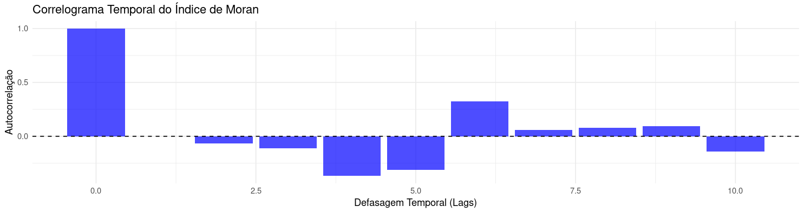
Figura 7. Correlograma temporal do índice de Moran
O correlograma temporal do Índice de Moran apresentado na imagem exibe a autocorrelação do índice ao longo do tempo para diferentes defasagens (lags). Em lag 0, o valor é 1.0, o que é esperado, já que a correlação de uma variável com ela mesma é sempre perfeita. Para defasagens maiores, a autocorrelação mostra comportamentos distintos: em lag 2, a autocorrelação se torna negativa, indicando uma possível inversão no padrão espacial após dois períodos. Nos lags 3 e 4, a correlação continua negativa, sugerindo que a estrutura espacial pode estar oscilando ao longo do tempo. Já nos lags 6 e 7, há um retorno para valores positivos, o que aponta para uma possível recorrência dos padrões espaciais.
A oscilação entre valores positivos e negativos pode indicar um comportamento cíclico ou uma mudança periódica nos padrões espaciais ao longo dos meses. Essa dinâmica pode ser influenciada por fatores sazonais, como variações no comportamento dos usuários da plataforma ao longo do ano. Além disso, a alternância nos padrões espaciais pode estar relacionada a mudanças estruturais nos clusters espaciais, potencialmente ligadas a flutuações no mercado imobiliário, no turismo ou em outros fatores externos.
A análise do correlograma sugere que existe dependência temporal na estrutura espacial dos dados, mas essa dependência não se mantém estável ao longo do tempo. A presença de períodos de correlação negativa e positiva indica que o padrão espacial pode passar por mudanças cíclicas ou intermitentes. Para investigar melhor essa oscilação, uma abordagem interessante seria testar a autocorrelação espacial sazonal, verificando se há padrões recorrentes em determinadas épocas do ano.
3.2.7.3 Autocorrelação espaço-temporal#
Para analisar a dinâmica espaço-temporal das avaliações das hospedagens em Copacabana em nosso estudo de caso, será utilizada a métrica do Índice de Moran Espaço-Temporal (STI). Essa abordagem permite avaliar tanto a distribuição espacial quanto a evolução temporal dos padrões de autocorrelação espacial, fornecendo uma visão abrangente sobre a persistência ou dissipação dos clusters espaciais ao longo do período estudado.
A aplicação do Índice de Moran Espaço-Temporal (STI) possibilitará identificar se os padrões espaciais observados em determinados meses se repetem em períodos subsequentes ou se apresentam uma dinâmica mais volátil. Um STI positivo e significativo indicará a manutenção de padrões espaciais similares ao longo do tempo, sugerindo sazonalidade ou estabilidade na distribuição das avaliações. Em contrapartida, um STI negativo apontará para uma dispersão espaço-temporal, indicando mudanças frequentes nos padrões espaciais.
A análise se concentrará em determinar se os clusters de altas ou baixas avaliações persistem nas mesmas regiões ao longo do ano ou se novas áreas surgem como pontos de destaque em determinados períodos.
A Figura 8 apresenta a evolução do Índice de Moran Espaço-Temporal ao longo dos meses de 2024, permitindo uma visualização da variação da autocorrelação espaço-temporal das avaliações das hospedagens em Copacabana.
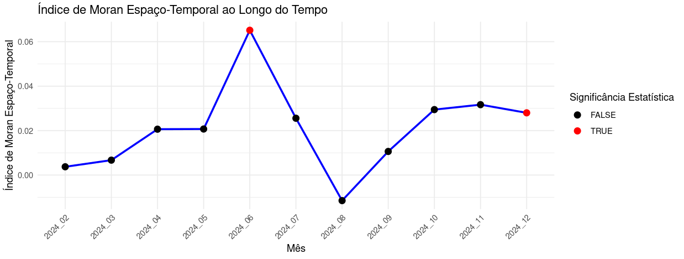
Figura 8. Evolução do Índice de Moran Espaço-Temporal das Avaliações de Hospedagens em Copacabana ao Longo de 2024
Observa-se que o Índice de Moran Espaço-Temporal mantém-se relativamente baixo durante a maior parte do período analisado, indicando uma baixa dependência espaço-temporal na distribuição das avaliações. No entanto, destaca-se o mês de junho (2024_06), onde o índice atinge seu pico máximo, evidenciando a formação de padrões espaciais significativos nesse período. Esse comportamento pode estar relacionado a fatores sazonais, como o aumento do turismo no inverno, refletindo uma concentração de avaliações em regiões específicas.
Outro ponto notável é o mês de agosto (2024_08), onde o índice atinge um valor negativo, sugerindo uma dispersão espaço-temporal, ou seja, a ausência de padrões consistentes na distribuição espacial das avaliações. Nos meses seguintes, o índice retorna a valores positivos, mas sem atingir significância estatística, indicando uma leve autocorrelação sem um padrão claro de persistência espaço-temporal.
A presença de pontos em vermelho na figura indica os períodos em que o Índice de Moran Espaço-Temporal foi estatisticamente significativo, reforçando a importância de uma análise detalhada nesses meses específicos. Esses resultados fornecem uma base sólida para explorar os fatores subjacentes que influenciam a distribuição das avaliações em diferentes épocas do ano, contribuindo para o planejamento estratégico e para a gestão eficiente do turismo em Copacabana.
3.3 Análise Local#
Enquanto a análise global fornece uma visão ampla da distribuição espacial e temporal dos dados, a análise local permite examinar como esses padrões variam dentro da região de estudo. Esse tipo de abordagem é de suma importância para identificar clusters (áreas onde valores semelhantes estão concentrados) e outliers espaciais (pontos que se diferenciam significativamente de seus vizinhos).
Entre os métodos mais utilizados na análise local estão o LISA (Local Indicators of Spatial Association) e o Getis-Ord G*. O LISA mede a autocorrelação espacial localmente, permitindo identificar clusters de valores altos ou baixos, além de destacar áreas com padrões espaciais diferenciados. Já o Getis-Ord G* foca em áreas de alta e baixa intensidade, identificando hotspots, que representam concentrações significativas de valores elevados, e coldspots, que indicam concentrações significativas de valores baixos.
Esses dois métodos complementam-se na análise local, oferecendo diferentes perspectivas sobre a distribuição espacial dos dados e ajudando a revelar padrões locais específicos que poderiam não ser detectados em uma análise global.
A análise local responde a perguntas como:
Quais áreas possuem os maiores agrupamentos de valores elevados?
Existem regiões que apresentam um padrão diferente do restante do espaço?
Há áreas que se destacam por comportamento atípico em relação ao seu entorno?
Essas ferramentas possibilitam uma análise mais detalhada dos padrões espaciais, permitindo uma interpretação granular e contextualizada dos dados.
Além da dimensão espacial, a análise local pode ser ampliada para considerar também a dimensão temporal, fornecendo uma perspectiva espaço-temporal dos padrões locais. Essa abordagem permite identificar não apenas onde os clusters e outliers estão localizados, mas também quando esses padrões se manifestam e como evoluem ao longo do tempo.
A análise espaço-temporal local é importante em contextos onde o comportamento dos dados é influenciado por fatores sazonais ou mudanças dinâmicas ao longo do tempo. Por exemplo, ao analisar as avaliações de hospedagens em Copacabana, essa metodologia ajuda a responder questões como:
Quais regiões mantêm altas avaliações de forma consistente ao longo do ano?
Existem áreas que se tornam hotspots apenas em períodos específicos, como alta temporada turística?
Como os padrões espaciais de avaliações variam de um mês para outro?
Ao incorporar a dimensão temporal na análise local, é possível detectar padrões persistentes, mudanças sazonais e até mesmo anomalias temporárias que poderiam passar despercebidas em uma análise puramente espacial ou global. Essa abordagem mais detalhada e dinâmica contribui para uma interpretação mais completa dos fenômenos espaço-temporais.
3.3.1 LISA (Local Moran’s I)#
O Índice Local de Moran ((I_L)), também chamado de LISA (Local Indicators of Spatial Association), é uma estatística que mede a autocorrelação espacial local, ou seja, verifica se um ponto ou região apresenta uma dependência espacial significativa em relação aos seus vizinhos. Quando adaptado para o contexto espaço-temporal, o LISA permite não apenas identificar padrões espaciais locais, mas também avaliar como esses padrões evoluem ao longo do tempo, ampliando a análise para uma dimensão mais dinâmica e complexa.
A equação do Índice Local de Moran é:
onde:
\(I_L\) representa o Índice Local de Moran para cada ponto \(i\),
\(D_i\) e \(D_j\) são os valores da variável de interesse nas localidades \(i\) e \(j\),
\(\overline{D}\) é a média global da variável,
\(W_{ij}\) é a matriz de pesos espaciais, indicando a influência dos vizinhos sobre o ponto \(i\).
No contexto espaço-temporal, o LISA é adaptado para incorporar a dimensão temporal, analisando a autocorrelação local não apenas entre pontos no espaço, mas também ao longo de diferentes períodos de tempo. A matriz de pesos espaciais (W_{ij}) é substituída por uma matriz de pesos espaço-temporais, que considera tanto a proximidade espacial quanto a proximidade temporal das observações:
onde:
\(D_{it}\) e \(D_{jt}\) são os valores da variável nas localidades \(i\) e \(j\) em um instante de tempo \(t\).
\(W_{ijt}\) é a matriz de pesos espaço-temporais, integrando a influência espacial e a proximidade temporal.
Essa extensão permite identificar não apenas onde os clusters espaciais estão localizados, mas também quando eles ocorrem, fornecendo uma visão detalhada da persistência, sazonalidade ou volatilidade dos padrões espaciais ao longo do tempo.
O mapa de clusters LISA espaço-temporal classifica as regiões nas mesmas cinco categorias principais do LISA tradicional, mas com uma interpretação que incorpora o componente temporal:
Alto-Alto (H-H): Regiões com valores elevados que permanecem cercadas por outras regiões de valores elevados ao longo do tempo, indicando clusters persistentes.
Baixo-Baixo (L-L): Áreas com valores baixos constantes cercadas por outras regiões de valores baixos, sugerindo padrões de baixa intensidade estáveis.
Baixo-Alto (L-H): Locais com valores baixos cercados por regiões de valores altos, indicando outliers espaciais negativos que podem surgir ou desaparecer em diferentes períodos.
Alto-Baixo (H-L): Áreas com valores altos cercadas por valores baixos, representando outliers espaciais positivos que podem indicar anomalias temporárias.
Sem Significância: Regiões onde não há autocorrelação espaço-temporal estatisticamente significativa, sugerindo um comportamento aleatório ao longo do espaço e do tempo.
3.3.2 Getis-Ord G*: Identificação de Hotspots e Coldspots#
O Índice Getis-Ord G* é uma ferramenta de análise espacial amplamente utilizada para identificar hotspots (áreas com alta intensidade de um fenômeno) e coldspots (regiões com baixa intensidade) em uma determinada área de estudo. Ao contrário do Índice de Moran, que mede a autocorrelação espacial considerando a relação entre um ponto e seus vizinhos, o Getis-Ord G* foca na intensidade dos valores dentro de uma área específica, avaliando se uma região apresenta uma concentração significativa de valores altos ou baixos, independentemente da correlação direta entre os pontos.
A estatística ( G^* ) calcula a concentração espacial de uma variável dentro de uma janela de vizinhança especificada, o que permite identificar padrões locais em diferentes escalas espaciais. A fórmula do Índice Getis-Ord G* para uma localização ( i ) é expressa como:
onde:
\(G^*_i\) representa o valor do índice para o local \(i\),
\(X_j\) é o valor da variável de interesse no local \(j\),
\(W_{ij}\) é a matriz de pesos espaciais, que define a influência dos vizinhos \(j\) sobre o ponto \(i\).
A interpretação do \(G^*_i\) é baseada em sua significância estatística:
Quando o \(G^*_i\) é significativamente alto, o local \(i\) está cercado por valores altos, configurando um hotspot. Isso indica a presença de uma concentração significativa de altos valores dentro da vizinhança definida, o que pode ser indicativo de áreas de alta demanda, incidência de eventos ou zonas de interesse estratégico.
Se o \(G^*_i\) é significativamente baixo, o local \(i\) encontra-se em meio a valores baixos, caracterizando um coldspot. Essa situação aponta para uma concentração estatisticamente significativa de valores baixos, o que pode revelar regiões menos favorecidas, áreas de baixa demanda ou zonas críticas que merecem atenção específica.
Quando o \(G^*_i\) não apresenta significância estatística, a distribuição dos valores é próxima da aleatoriedade, sem a formação de padrões espaciais claros.
No contexto espaço-temporal, o Índice Getis-Ord G* pode ser adaptado para identificar hotspots e coldspots que persistem ou surgem ao longo do tempo. A fórmula espaço-temporal incorpora a dimensão temporal na matriz de pesos, permitindo analisar se uma região mantém altas ou baixas intensidades em diferentes períodos de tempo:
onde:
\(W_{ijt}\) é a matriz de pesos espaço-temporais, que considera proximidade espacial e proximidade temporal.
\(X_{jt}\) é o valor da variável de interesse no local \(j\) e no tempo \(t\).
Essa adaptação permite identificar padrões dinâmicos e responder a perguntas como:
Os hotspots de uma variável permanecem nas mesmas regiões ao longo do ano?
Há uma sazonalidade na distribuição espacial dos valores altos ou baixos?
Quais áreas apresentam mudanças significativas ao longo do tempo?
3.3.3 Padrões Espaciais de Avaliações em Copacabana: Análise Local#
Compreendidas as diferenças e aplicações do LISA e do Getis-Ord G*, agora partiremos para a aplicação prática dessas metodologias na nossa área de estudo.
Nesta seção, realizaremos uma análise local das avaliações das hospedagens em Copacabana, utilizando tanto o Índice Local de Moran (LISA) quanto o Getis-Ord G*. O objetivo é identificar onde estão localizados os clusters espaciais, os hotspots e os coldspots, além de detectar possíveis outliers espaciais.
A aplicação dessas ferramentas permitirá uma visão mais detalhada da distribuição das avaliações, fornecendo informações sobre como os padrões espaciais variam ao longo do bairro e ao longo do tempo. Ao final, espera-se obter mapas temáticos que destaquem as áreas com comportamento diferenciado, contribuindo para a interpretação da dinâmica espacial das avaliações.
3.3.3.1 Análise Local com o Índice de Moran Local (LISA)#
Inicialmente realizaremos o cálculo do Índice de Moran Local (LISA) para todos os meses do período analisado e interpretaremos os resultados por meio de um boxplot. Para evitar sobrecarga visual e facilitar a interpretação, focaremos a visualização detalhada em apenas dois meses, selecionados com base nos valores do Índice de Moran Global.
A Figura 9 apresenta uma série de mapas mostrando a distribuição dos clusters espaciais detectados pelo Índice de Moran Local (LISA) ao longo de 12 meses em 2024.
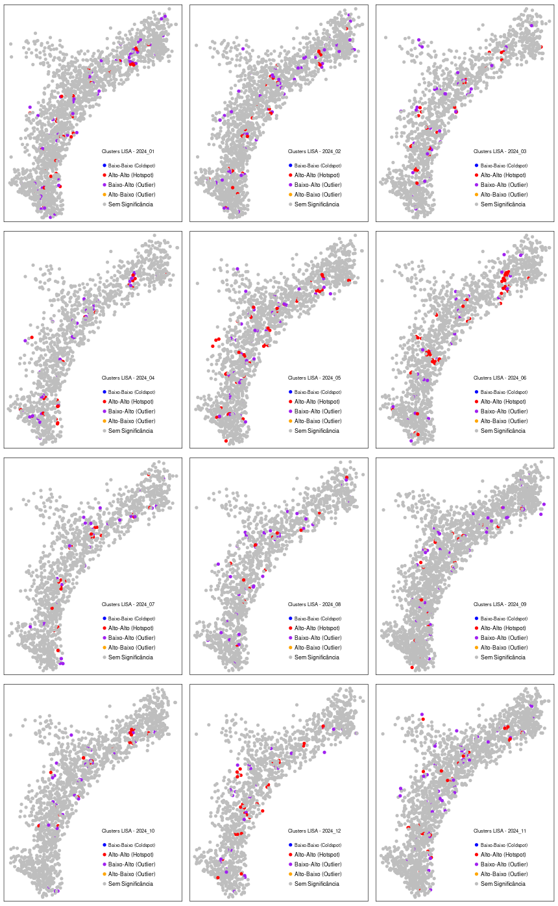
Figura 9. Clusters espaciais detectados pelo Índice de Moran Local (LISA)
Cada mapa representa a configuração espacial dos clusters de avaliações para um determinado mês, permitindo identificar padrões de autocorrelação espacial e possíveis variações temporais. A maioria dos pontos, em todos os meses, está classificada como “Sem Significância”, o que indica que, na maior parte do tempo, não há uma autocorrelação espacial forte nas avaliações.
No entanto, observa-se variação na presença e intensidade dos clusters Alto-Alto (Hotspot) e Baixo-Baixo (Coldspot), assim como dos outliers Baixo-Alto e Alto-Baixo, sugerindo mudanças na distribuição espacial ao longo do tempo. Os meses de janeiro, maio, junho, setembro e outubro apresentam uma maior concentração de Hotspots, indicando a formação de regiões onde avaliações mais altas estão agrupadas. Em contrapartida, nos meses de março, agosto e novembro, os Hotspots são menos frequentes e mais dispersos, sugerindo uma distribuição mais aleatória das avaliações nesses períodos.
A distribuição dos Coldspots ocorre de forma mais esparsa, com destaque para junho, julho e outubro, enquanto em outros meses esses clusters são quase inexistentes. Já os outliers Baixo-Alto e Alto-Baixo aparecem de maneira relativamente uniforme ao longo do tempo, sem variações sazonais significativas.
Os resultados indicam que a autocorrelação espacial das avaliações não é estável ao longo do ano, podendo estar relacionada a fatores sazonais na formação dos clusters. O aumento de Hotspots em meses como junho, setembro e outubro pode sinalizar períodos de maior demanda ou sazonalidade do turismo. A presença reduzida de Coldspots sugere que não há uma concentração constante de avaliações baixas em uma mesma área. A variação na dispersão dos outliers indica que algumas acomodações se destacam ocasionalmente de seus vizinhos, mas sem um padrão fixo.
A Figura 10 ilustra a distribuição do Índice de Moran Local ((I_i)) ao longo dos meses analisados.
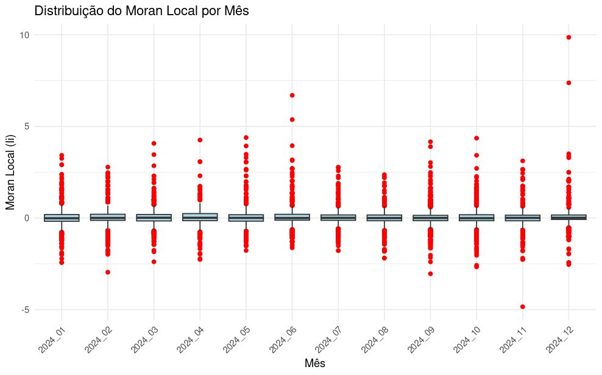
Figura 10. Distribuição do Índice de Moran Local
De forma geral, os valores se mantêm relativamente estáveis, próximos de zero, sugerindo uma baixa autocorrelação espacial na maioria dos casos. No entanto, algumas variações podem ser observadas, principalmente nos meses de junho (2024_06) e dezembro (2024_12), que apresentam valores extremos mais distantes.
A presença de outliers, indicados por pontos vermelhos, revela que algumas localidades possuem um Moran Local significativamente diferente da média do mês, indicando a existência de clusters espaciais relevantes, como hotspots ou coldspots. A dispersão dos valores varia entre os meses, sugerindo que a estrutura espacial das avaliações pode sofrer mudanças ao longo do tempo.
Os meses de junho e dezembro mostram maior variabilidade, o que pode estar relacionado a flutuações sazonais na autocorrelação espacial.
Agora vamos realizar uma análise mais detalhada considerando somente os meses de junho e agosto. Esses meses foram escolhidos com base nos resultados da Análise Global realizada na seção anterior. O mês de junho (2024_06) apresentou o maior índice de Moran, com um valor de 0.0455 e um p-valor de 0.0010, indicando uma maior autocorrelação espacial positiva e, consequentemente, padrões espaciais mais definidos. Em contraste, o mês de agosto (2024_08) registrou o menor Moran’s I, com um valor de -0.0098 e um p-valor de 0.7193, sugerindo pouca ou nenhuma autocorrelação espacial e um padrão mais aleatório na distribuição dos dados. A Figura 8 apresenta os mapas comparativos dos clusters espaciais detectados pelo Índice de Moran Local (LISA) nesses meses.
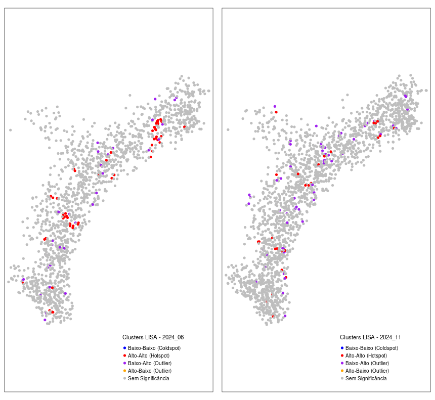
Figura 11. Clusters espaciais detectados pelo Índice de Moran Local (LISA) nos meses de junho (2024_06) e agosto (2024_08)
No mês de junho, destaca-se uma forte presença de clusters Alto-Alto (Hotspot), representados por pontos vermelhos, especialmente em algumas áreas do centro e do norte. Os clusters Baixo-Baixo (Coldspot), indicados pelos pontos azuis, são menos evidentes ou ausentes. Além disso, há outliers Baixo-Alto e Alto-Baixo, identificados pelos pontos roxos e amarelos, que aparecem de forma limitada e dispersa.
Em contraste, o mês de agosto apresenta um padrão espacial menos estruturado. Os Hotspots são menos numerosos e mais dispersos em comparação a junho, enquanto os outliers continuam presentes, mas sem formar grandes agrupamentos. Os Coldspots permanecem ausentes, e a maioria dos pontos segue classificada como “Sem Significância”, sugerindo um padrão espacial menos definido.
Essas diferenças podem estar associadas a mudanças sazonais na demanda, variações na oferta de acomodações ou alterações no comportamento dos usuários ao longo do tempo.
Teste de Kruskal-Wallis
Para complementar a análise dos clusters espaciais e verificar se as diferenças observadas entre os meses são estatisticamente significativas, aplicamos o Teste de Kruskal-Wallis. Esse teste não paramétrico é adequado para comparar distribuições de dados em diferentes grupos, permitindo avaliar se o Índice de Moran Local (LISA) apresenta variações relevantes ao longo do tempo.
Resultado:
Estatística Qui-quadrado = 12.485
Graus de liberdade (df) = 11
p-valor = 0.3283
Os resultados do Teste de Kruskal-Wallis apresentaram um p-valor de 0.3283, indicando que não há evidências estatísticas suficientes para afirmar que a distribuição do Índice de Moran Local (LISA) difere significativamente entre os meses analisados. Como o p-valor obtido é maior que o nível de significância usual (0.05), não rejeitamos a hipótese nula, sugerindo que os meses possuem distribuições semelhantes do LISA.
O valor do teste (chi-squared = 12.485, df = 11) reforça essa interpretação, mostrando que as diferenças entre os meses são pequenas em relação à variabilidade total dos dados. O p-valor elevado sugere que as variações no Índice de Moran Local observadas ao longo do tempo podem ser explicadas pelo acaso, sem indicar um padrão estatisticamente significativo.
Esses resultados corroboram a hipótese de que a autocorrelação espacial das avaliações se mantém relativamente estável ao longo do ano, sem apresentar mudanças estruturais expressivas na distribuição dos clusters.
Apesar de o Teste de Kruskal-Wallis não ter identificado diferenças significativas, avançaremos para a próxima etapa da análise, aplicando o Getis-Ord G. Essa abordagem permitirá uma avaliação mais detalhada da intensidade dos hotspots ao longo do tempo, oferecendo uma nova perspectiva sobre a concentração espacial dos clusters de valores altos e possibilitando a identificação de padrões espaciais sutis que possam ter passado despercebidos na análise anterior.
3.3.3.2 Análise Local com o Índice de Getis-Ord G*#
Como vimos anteriormente, o Getis-Ord G permite identificar e quantificar a intensidade dos hotspots e coldspots, ou seja, áreas onde as avaliações apresentam valores significativamente altos ou baixos em relação ao entorno. Enquanto o Índice de Moran Local (LISA) mede a autocorrelação espacial e classifica os pontos em clusters de alta e baixa correlação, o Getis-Ord G* foca na identificação da intensidade dessas concentrações espaciais, fornecendo uma perspectiva complementar sobre a estrutura espacial dos dados.
Com essa abordagem, poderemos avaliar se existem regiões que mantêm padrões de altas ou baixas avaliações de forma persistente, além de detectar possíveis variações sazonais ao longo dos meses.
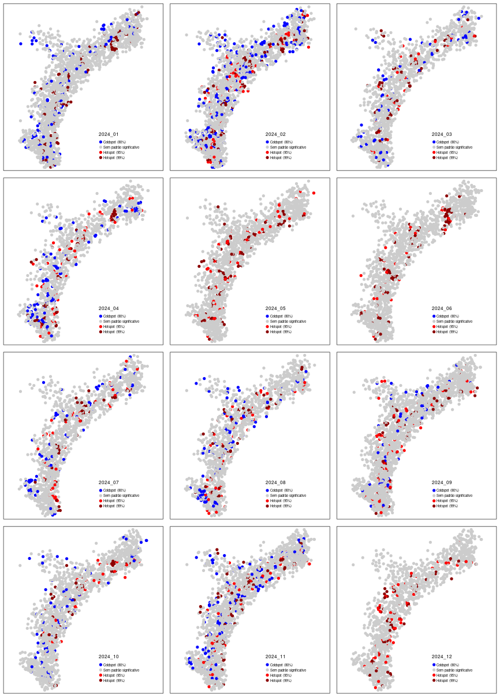
Figura 12. Distribuição espacial dos hotspots e coldspots detectados pelo Getis-Ord G* ao longo dos meses de 2024.
A imagem apresenta os resultados da análise do Getis-Ord G* para cada mês de 2024, permitindo identificar padrões espaciais na distribuição das avaliações ao longo do tempo. Essa técnica estatística destaca hotspots e coldspots, onde os hotspots, representados em vermelho, indicam áreas com concentrações significativamente altas de avaliações, enquanto os coldspots, em azul, correspondem a regiões onde as avaliações são significativamente mais baixas do que a média do entorno. As áreas em cinza representam locais onde não há um padrão espacial significativo.
Observa-se uma variação temporal na distribuição dos hotspots e coldspots, sugerindo que a estrutura espacial das avaliações não permanece constante ao longo do ano. Em meses como maio, junho e outubro, há uma forte concentração de hotspots, indicando que nesses períodos há um agrupamento maior de avaliações altas, possivelmente relacionado a fatores sazonais, como maior demanda por acomodações ou eventos específicos que influenciam as avaliações. Por outro lado, em meses como janeiro, março, julho e agosto, há uma distribuição mais equilibrada entre hotspots e coldspots, sugerindo que as avaliações são mais variadas e não apresentam uma predominância clara de áreas com quantidade de avaliações alta ou baixa. Em meses como fevereiro e abril, observa-se uma dispersão maior dos padrões espaciais, indicando que as avaliações podem estar menos estruturadas espacialmente, sem uma tendência clara de concentração.
Os resultados indicam que a intensidade dos hotspots e coldspots varia ao longo do ano, com períodos onde a concentração de avaliações altas é mais evidente e outros onde há uma distribuição mais difusa das avaliações. A presença de hotspots persistentes em determinados meses pode indicar a existência de regiões preferidas pelos usuários ao longo do tempo, enquanto a alternância entre hotspots e coldspots em outros meses sugere variações na demanda ou mudanças sazonais no comportamento das avaliações. A análise do Getis-Ord G* complementa os resultados do Índice de Moran Local (LISA) ao destacar tanto a presença de clusters quanto a intensidade dessas concentrações e sua evolução temporal.
3.3.3.3 Análise da persistência espacial dos padrões ao longo do tempo#
A análise da persistência espacial dos padrões ao longo do tempo permite identificar áreas em que os hotspots e coldspots permaneceram consistentes ao longo dos meses analisados. Em contraste com as abordagens anteriores, que observaram a distribuição mensal dos clusters, essa análise busca entender a estabilidade dessas concentrações espaciais, classificando as áreas como hotspots persistentes, coldspots persistentes ou neutras, dependendo da frequência com que essas categorias foram identificadas ao longo do período.
Para isso, foram contabilizadas a ocorrência de hotspots (95% e 99%) e coldspots (95% e 99%) para cada localidade ao longo dos meses. Aquelas regiões que apresentaram predominantemente hotspots ao longo do tempo foram classificadas como hotspots persistentes, enquanto as áreas onde predominam coldspots foram classificadas como coldspots persistentes. As regiões onde não houve predominância de nenhuma dessas categorias foram consideradas neutras, indicando que não houve um padrão significativo e recorrente de concentração de avaliações altas ou baixas.
A Figura 13 apresenta o resultado da análise de persistência espacial dos padrões ao longo do tempo, destacando regiões onde os hotspots e coldspots se mantiveram constantes durante o período analisado.
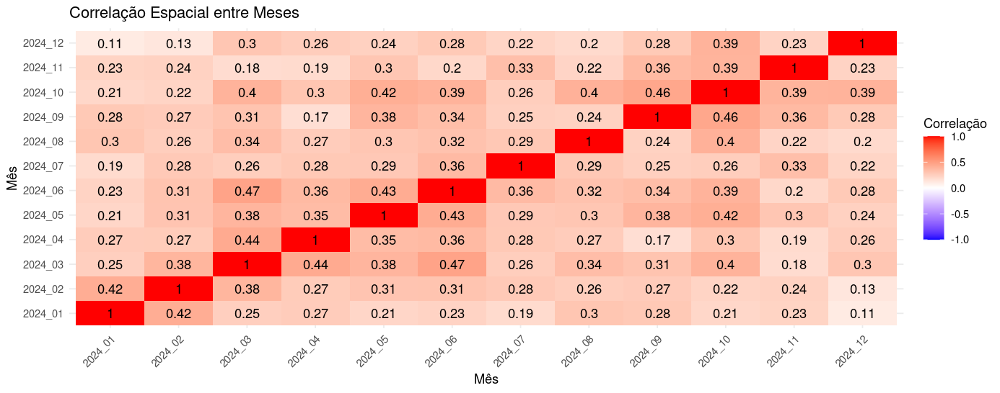
Figura 13. Persistência espacial dos hotspots e coldspots ao longo do tempo.
Os pontos vermelhos representam os hotspots persistentes, ou seja, áreas que apresentaram concentração elevada de avaliações altas ao longo de vários meses. Os pontos azuis indicam os coldspots persistentes, correspondendo a regiões com avaliações consistentemente baixas ao longo do tempo. Os pontos em cinza representam áreas classificadas como neutras, ou seja, locais onde não houve uma predominância clara de hotspots ou coldspots durante o período analisado.
A distribuição espacial dos hotspots persistentes revela que há regiões que mantêm avaliações consistentemente altas ao longo do tempo, indicando locais com uma oferta de acomodações com maior número de avaliações. Por outro lado, os coldspots persistentes são menos frequentes e aparecem em pontos dispersos, mas ainda assim indicam locais onde as avaliações tendem a permanecer mais baixas ao longo do tempo. A presença de um grande número de pontos neutros sugere que, para uma parcela significativa dos imóveis, não há um padrão espacial persistente, indicando que o número de avaliações pode sofrer variações ao longo dos meses, sem uma tendência clara de quantidade de avaliações alta ou baixa.
3.4 Síntese e Perspectivas: Integração da Análise Espaço-Temporal Global e Local#
Ao longo deste capítulo, exploramos as principais abordagens para a análise espaço-temporal, tanto em uma perspectiva global quanto local. As metodologias apresentadas, como o Índice de Moran Global, o Índice G de Getis-Ord, o LISA (Local Indicators of Spatial Association) e o Getis-Ord G*, foram aplicadas ao estudo de caso das avaliações de hospedagens em Copacabana, fornecendo uma compreensão sobre os padrões espaciais e temporais presentes nos dados.
Na análise global, identificamos que, na maior parte do período analisado, a autocorrelação espacial foi baixa, sugerindo uma distribuição relativamente aleatória das avaliações na maior parte do ano. No entanto, meses como junho e dezembro se destacaram ao apresentar clusters espaciais significativos, indicando sazonalidade e possíveis impactos do turismo nessas épocas específicas. A análise do Índice de Moran Espaço-Temporal reforçou essa interpretação, ao revelar que, embora a persistência espaço-temporal não seja uma regra, existem períodos em que os padrões espaciais se mostram mais definidos e estáveis.
Ao avançar para a análise local, o uso do LISA e do Getis-Ord G* permitiu uma avaliação mais granular, destacando regiões específicas de hotspots e coldspots. Observamos que os hotspots não apenas variam ao longo do tempo, mas também se concentram em áreas específicas. A análise da persistência espacial acrescentou uma dimensão importante, mostrando que, embora algumas regiões mantenham altas avaliações consistentemente, a maioria dos imóveis apresenta um comportamento mais dinâmico e variável ao longo do ano.
Os testes estatísticos, como o Kruskal-Wallis, complementaram a interpretação dos resultados ao indicar que, apesar das flutuações observadas, as diferenças na autocorrelação espacial entre os meses não foram estatisticamente significativas na maior parte dos casos. Isso reforça a ideia de que, embora existam picos sazonais, o comportamento espacial das avaliações tende a ser relativamente estável ou explicado pelo acaso em boa parte do ano.
Em síntese, este capítulo evidenciou como a combinação de análises globais e locais, integrando as dimensões espacial e temporal, pode proporcionar uma compreensão aprofundada da dinâmica espacial de fenômenos complexos. No contexto das avaliações de hospedagens em Copacabana, essa abordagem permitiu identificar tanto padrões persistentes quanto mudanças sazonais.
Contudo, é importante ressaltar que este capítulo ofereceu apenas uma introdução aos conceitos de análise global e local no contexto espaço-temporal. A análise espaço-temporal é um campo amplo e em constante evolução, com diversas outras metodologias e abordagens avançadas que podem ser exploradas para estudos mais complexos. Técnicas como análise de séries temporais espaciais, modelos de processos espaço-temporais estocásticos e abordagens baseadas em aprendizado de máquina são exemplos de caminhos para aprofundar o conhecimento nessa área.